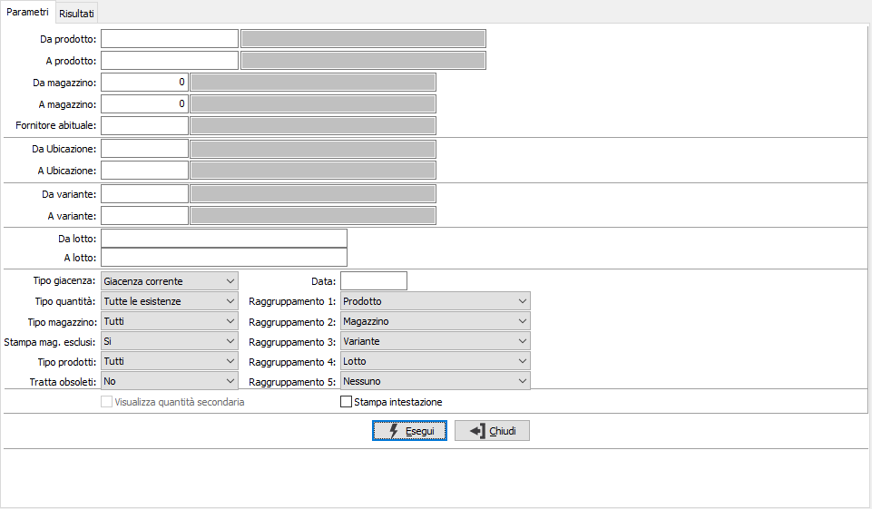
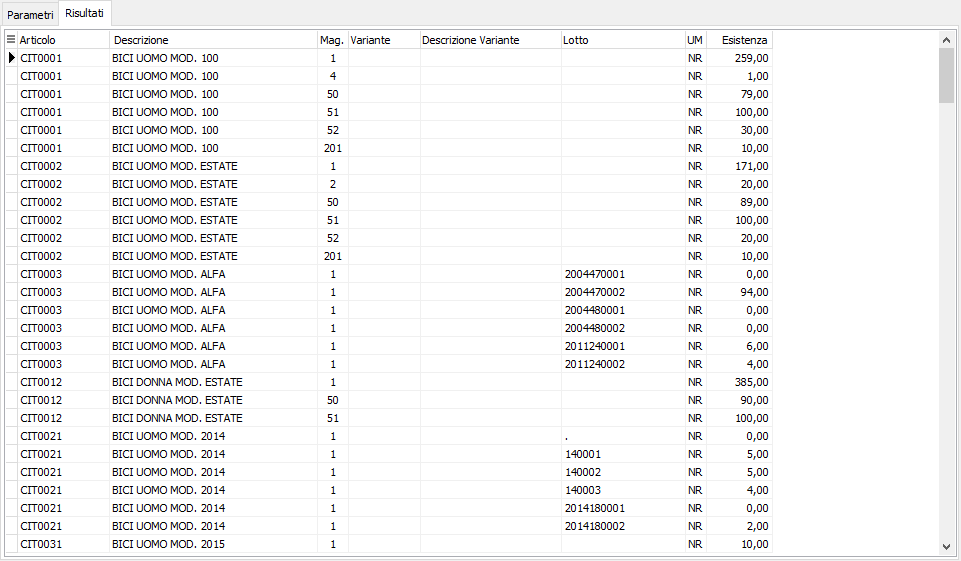

Analisi giacenze avanzate
Il programma consente di visualizzare le esistenze selezionando liberamente i livelli di raggruppamento. La procedura consente di ottenere l’analisi della giacenza incrociando liberamente come criteri di raggruppamento il prodotto, la variante, il lotto, l’ubicazione e il magazzino.
È possibile analizzare le giacenze alla data corrente oppure ad una qualsiasi data precedente, da indicare. I limiti richiesti a video consentono di selezionare prodotto, magazzino e prodotto per fornitore abituale, se gestite le altre componenti quali varianti, ubicazioni e lotti saranno disponibili anch'essi per la selezione; le opzioni di analisi sono le stessa della classica analisi giacenze, con la particolarità di poter definire i raggruppamenti, da 1 a 5. Effettuando l'analisi giacenze alla data è possibile visualizzare la giacenza di magazzino nella seconda unità di misura dell'articolo, attivando il check box "Visualizza quantità secondaria".

Confermando tramite pressione del bottone Esegui, vengono visualizzate nella linguetta Risultati le esistenze degli articoli selezionati; da questa sezione è possibile utilizzando i bottoni anteprima di stampa o stampa della tool bar, effettuare la stampa.
